Los daños por las heladas que reducirán la cosecha de café en Brasil , primer productor mundial , favorecerá la producción e ingresos de sus inmediatos competidores , entre ellos Colombia y los países cafeteros centroamericanos.
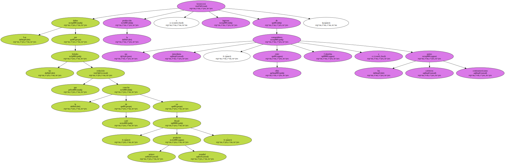Esta reducción ya ha repercutido en los precios del grano en los mercados internacionales y en el mercado de Nueva York alcanzaba el martes 116,5 centavos de dólar la libra para los suaves centroamericanos , el más alto desde el 13 de enero de este año.
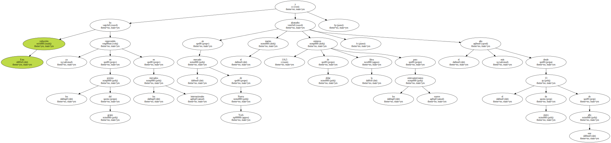Asimismo el precio interno del grano en Colombia , que paga el Fondo Nacional del Café ( FNC ) a los cultivadores , se situó hoy miércoles , en 191,49 dólares la saca de 125 kilos , un 24,85 por ciento más que el precio mínimo.
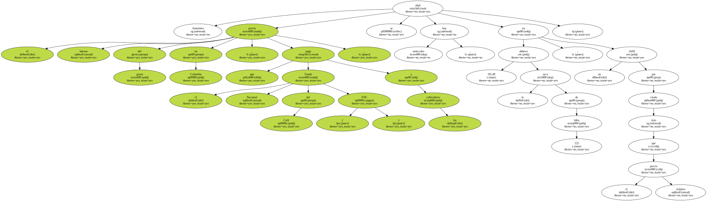Colombia , segundo productor y exportador mundial de café tras Brasil , producirá en el actual año civil cerca de 11,5 millones de sacas de 60 kilos y en el año cafetero cerca de 9,5 millones , según el gerente de la Federación de Cafeteros de Colombia , Jorge Cárdenas.
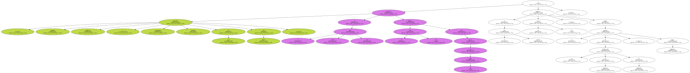Para el dirigente cafetero el aumento del precio externo , que va directamente a los productores , significará más tranquilidad para los cultivadores , porque ahora podrán atender sus deudas , mejorar sus cafetales y tener confianza en las inversiones.
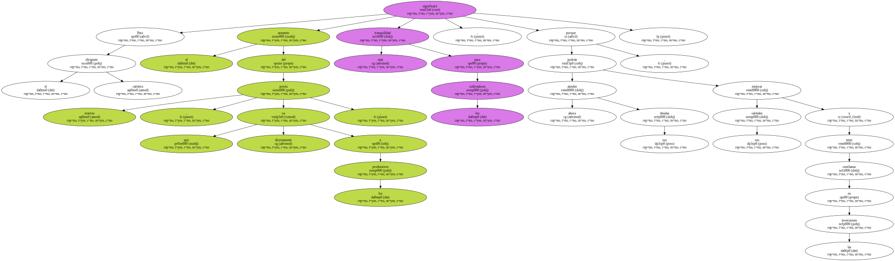En esa línea indicó que la reducción de la cosecha brasileña , entre 3 y 5 millones de sacos ( 60 kilos ) , incrementará los ingresos de cerca de 350.000 familias campesinas colombianas que viven del producto.
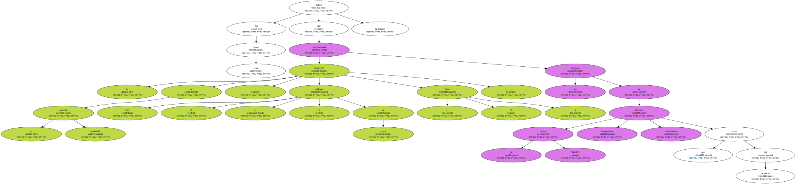Las autoridades cafeteras colombianas calculan que cada centavo de variación en el precio del café representa al país unos ingresos mayores o menores de cerca de 17 millones de dólares al año.
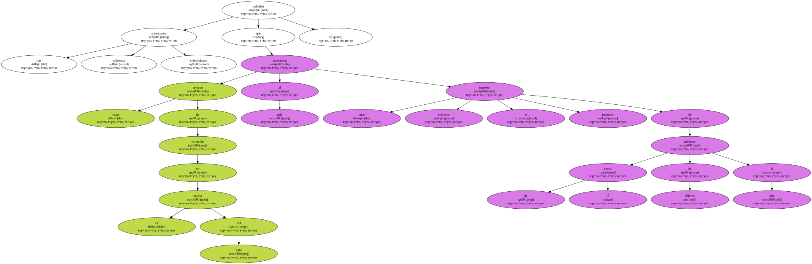" Lo malo para Brasil es bueno para Ecuador y otros países " , así expresaba hoy su optimismo el presidente de la Asociación Ecuatoriana de Exportadores de Café , Pablo Delgado.
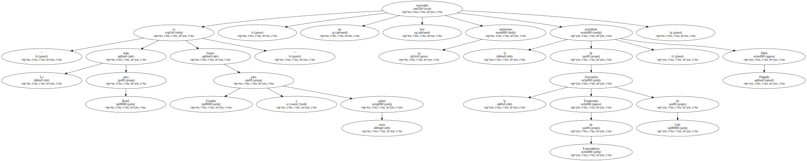La ola de frío en el cono sur coincide con la época de cosecha del café ecuatoriano , que va de julio a noviembre.
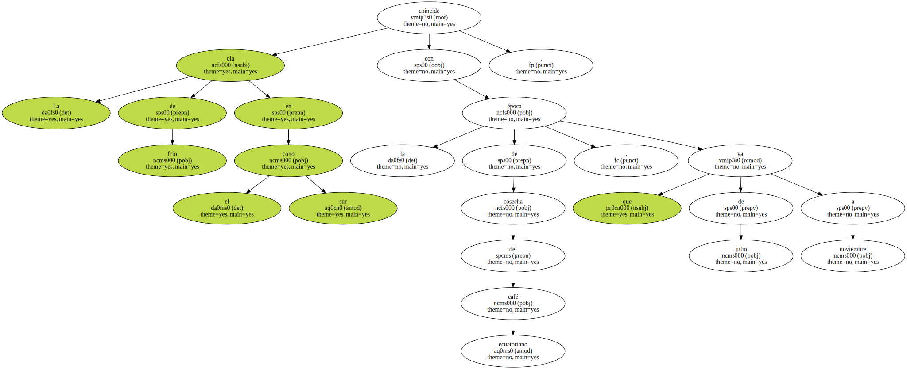Según los exportadores ecuatorianos , las ventas no subirán en cantidad , puesto que los volúmenes de producción están definidos , sino en beneficios , por el incremento de los precios.
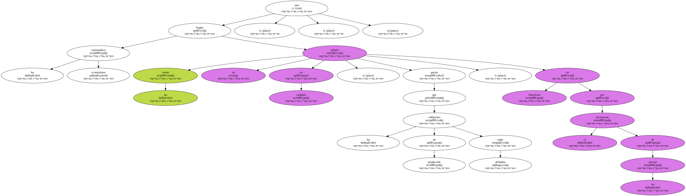" Este año , Ecuador no puede aspirar a exportar en café en grano más de 800.000 sacos de 60 kilos , y unos 400.000 de café industrializado " , estimó Delgado.
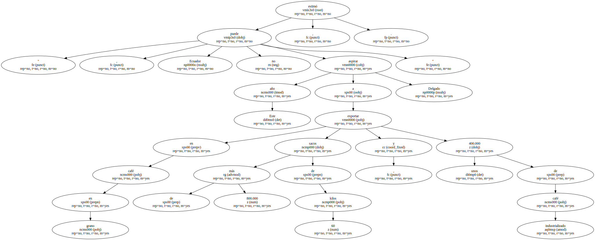Ecuador es uno de los catorce países de producción mixta ( arábigos y robusta ) está considerado el cuarto país productor y exportador de café industrializado.
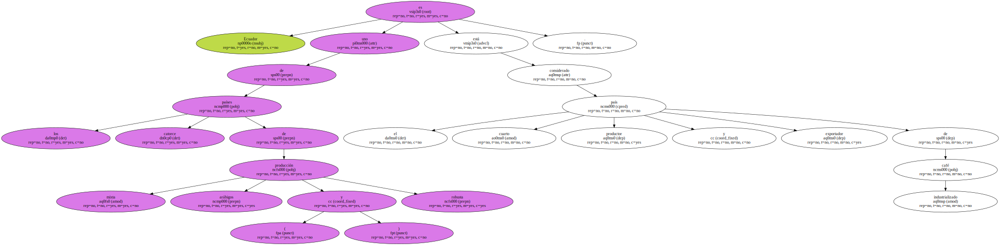Los productores de café de Costa Rica también se mostraron optimistas hoy por el aumento del precio del grano en el mercado internacional como consecuencia de las heladas en las plantaciones brasileñas.
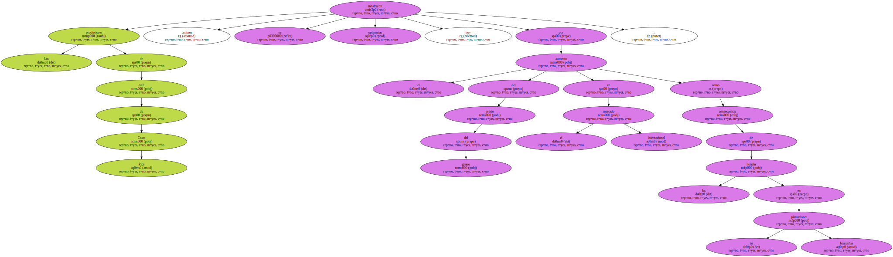El director ejecutivo del Instituto del Café de Costa Rica ( ICAFE ) , Juan Bautista Moya , indicó que el posible beneficio para los productores depende de que se mantenga la tendencia al alza o una estabilización de los precios en los topes actuales.

Moya dijo a EFE que este incremento en los precios incidirá en los 831.000 sacos que todavía faltan por vender de la cosecha 1999-2000 , que fue de 3,5 millones de sacos.
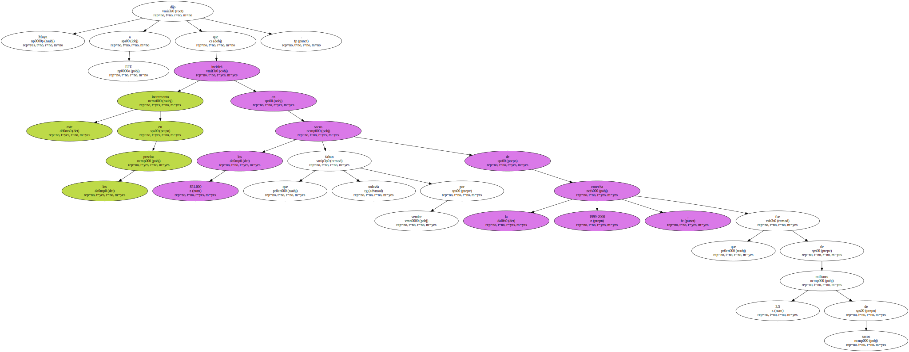Expresó que hasta el momento no se han generado pérdidas por los bajos precios de los meses anteriores , debido a que la cosecha 1999-2000 fue la tercera más grande de la historia costarricense y el volumen de las ventas ha compensado la baja de la cotización del producto.
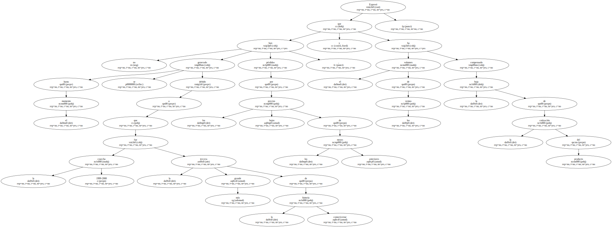Se espera que para la próxima cosecha costarricense , que comienza en octubre , el precio de venta promedio de Costa Rica supere los 111 dólares por saco , que fue el valor con que cerró la de 1999-2000.
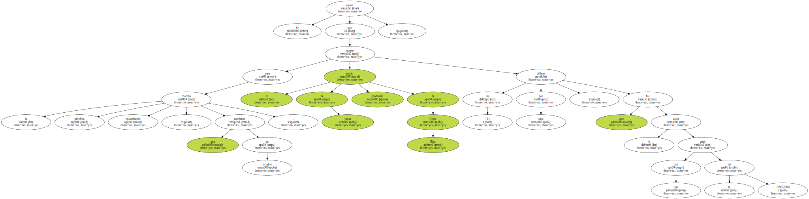Los fuertes fríos del Antártico afectaron la semana pasada a las plantaciones de café en los estados de Paraná y Sao Paulo , al sur de Brasil , y el lunes pasado a las de Minas Gerais , el mayor productor de café.
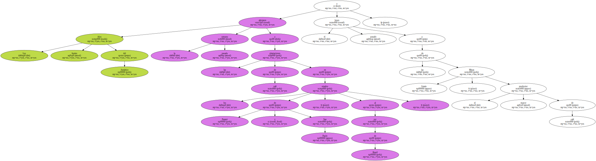Ante los bajos precios que se venían registrando en el mercado mundial , los miembros de la Asociación de Países Productores de Café ( APPC ) acordaron en mayo pasado retener hasta un 20 por ciento de la producción exportable.
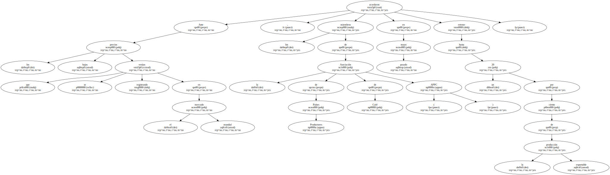Brasil calculaba para 2001 una cosecha de más de 35 millones de sacas de 60 kilos , de las que tenía programado retener 5 millones.
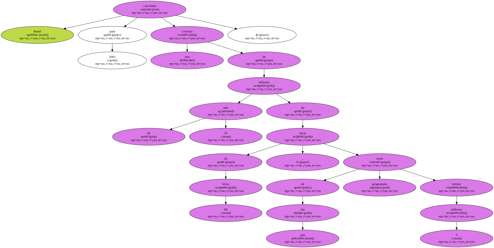